В треугольнике угол равен , , . Найдите .

В треугольнике угол равен , , . Найдите .
Отрезки и диаметры окружности с центром Угол равен Найдите величину угла Ответ дайте в градусах.
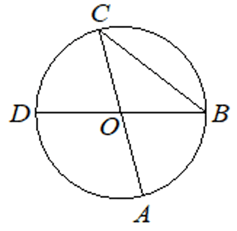
В треугольнике угол равен , , . Найдите .
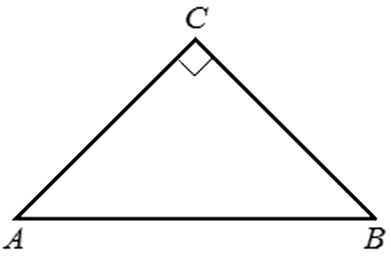
В треугольнике стороны и равны, угол равен угол внешний. Найдите величину угла Ответ дайте в градусах.
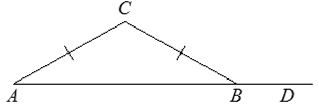
Найдите величину угла если его сторона касается окружности с центром отрезок пересекает окружность в точке (см. рисунок), а дуга окружности, заключённая внутри этого угла, равна Ответ дайте в градусах.

В треугольнике угол равен , , . Найдите .
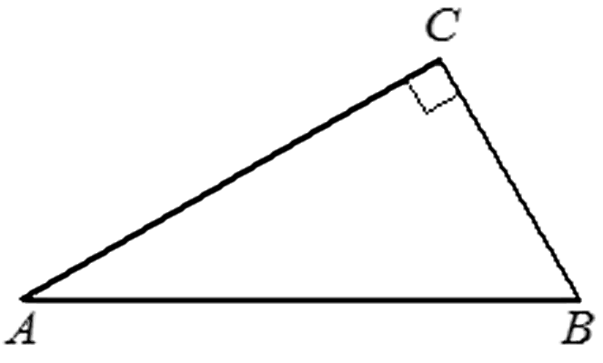
В четырёхугольник периметр которого равен 24, вписана окружность, Найдите длину стороны
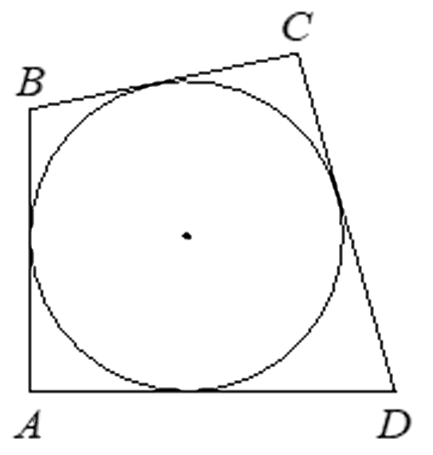
Четырёхугольник вписан в окружность. Угол равен угол равен Найдите угол Ответ дайте в градусах.
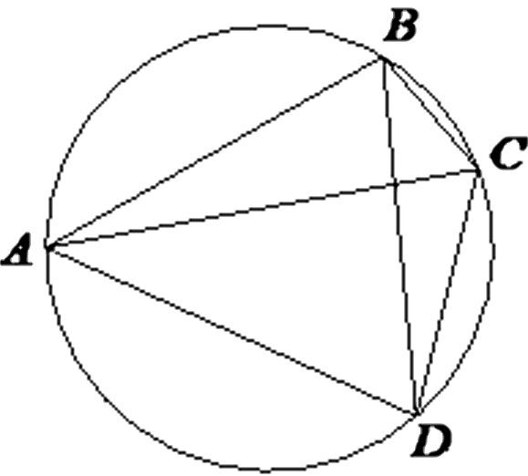
Четырёхугольник вписан в окружность. Угол равен , угол равен . Найдите угол . Ответ дайте в градусах.

В треугольнике угол равен , , . Найдите .
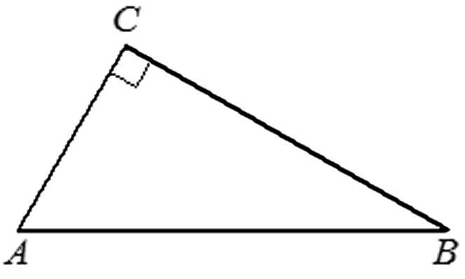
Отрезки и диаметры окружности с центром Угол равен Найдите угол Ответ дайте в градусах.
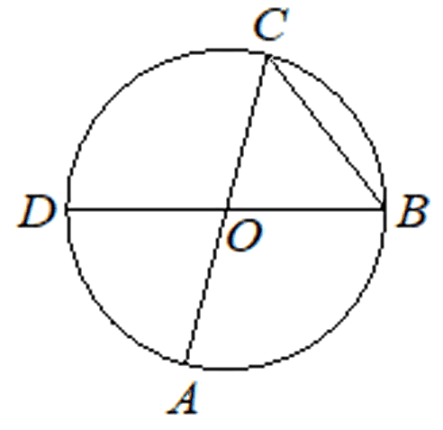
В треугольнике \(ABC\) сторона \(AB\) равна \(3\sqrt{2}\), угол \(C\) равен \(135^\circ.\) Найдите радиус описанной около этого треугольника окружности.
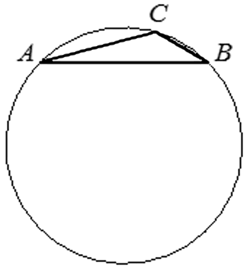
Два угла вписанного в окружность четырёхугольника равны и Найдите больший из оставшихся углов. Ответ дайте в градусах.

Четырёхугольник вписан в окружность.
Угол равен угол равен Найдите угол Ответ дайте в градусах.

Отрезки и диаметры окружности с центром . Угол равен . Найдите вписанный угол . Ответ дайте в градусах.

В четырёхугольник вписана окружность, Найдите периметр четырёхугольника

Четырёхугольник вписан в окружность. Угол равен , угол равен . Найдите угол . Ответ дайте в градусах.

Площадь параллелограмма равна 28. Точка — середина стороны Найдите площадь трапеции
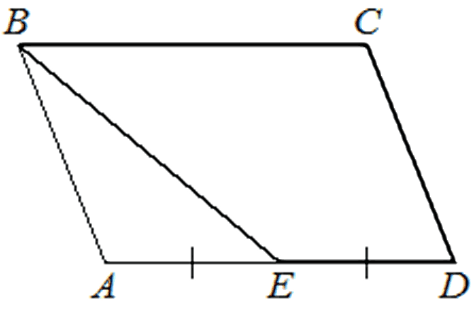
Острый угол прямоугольного треугольника равен . Найдите величину угла между высотой и медианой проведёнными из вершины прямого угла Ответ дайте в градусах.
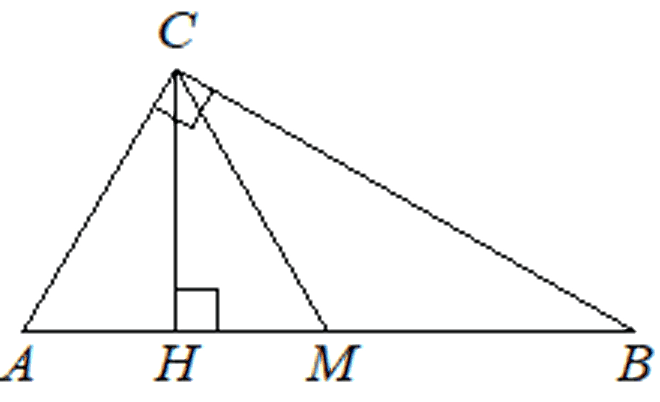
В четырёхугольник вписана окружность, Найдите периметр четырёхугольника
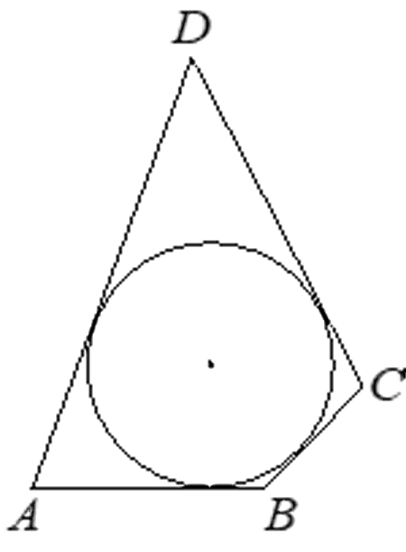
Площадь треугольника \(ABC\) равна 24, \(DE\) — средняя линия, параллельная стороне \(AB\). Найдите площадь трапеции \(ABED\).
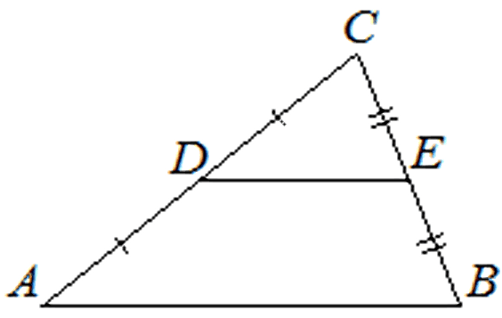
Четырёхугольник \(ABCD\) вписан в окружность. Угол \(BAD\) равен \(136^\circ\). Найдите угол \(BCD\). Ответ дайте в градусах.
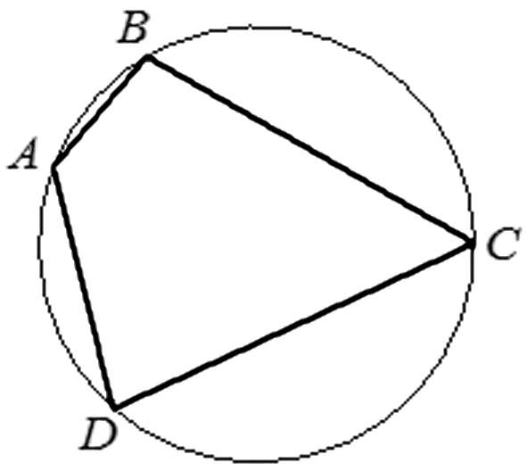
Четырёхугольник вписан в окружность. Угол равен угол равен Найдите угол Ответ дайте в градусах.
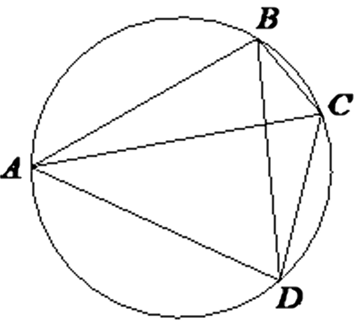
В четырёхугольник вписана окружность, Найдите длину четвёртой стороны четырёхугольника.

В четырёхугольник периметр которого равен 22, вписана окружность, Найдите длину стороны

Площадь параллелограмма равна 24. Точка середина стороны Найдите площадь трапеции

Острый угол \(B\) прямоугольного треугольника \(ABC\) равен \(21^\circ.\) Найдите величину угла между биссектрисой \(CD\) и медианой \(CM,\) проведёнными из вершины прямого угла \(C.\) Ответ дайте в градусах.
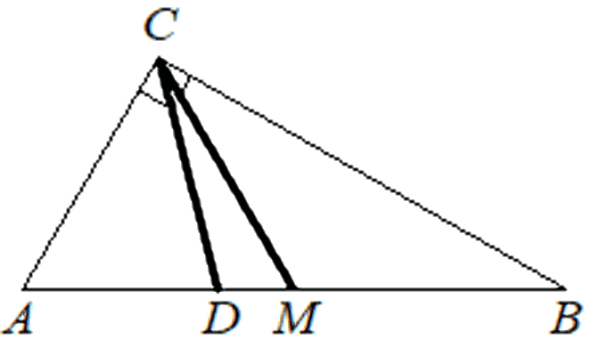
Найдите центральный угол, если он на больше острого вписанного угла, опирающегося на ту же дугу. Ответ дайте в градусах.

Две стороны треугольника равны 15 и 18. Высота, опущенная на большую из этих сторон, равна 10. Найдите длину высоты, опущенной на меньшую из этих сторон треугольника.

Острый угол прямоугольного треугольника равен Найдите величину угла между высотой и биссектрисой проведёнными из вершины прямого угла Ответ дайте в градусах.

Две стороны треугольника равны 21 и 28. Высота, опущенная на большую из этих сторон, равна 15. Найдите высоту, опущенную на меньшую из этих сторон треугольника.
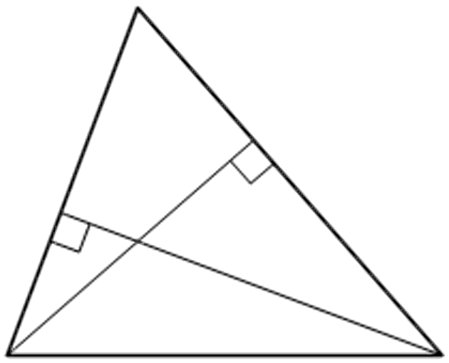
Отрезки и диаметры окружности с центром . Угол равен . Найдите угол . Ответ дайте в градусах.
Два угла вписанного в окружность четырёхугольника равны \(99^\circ\) и \(117^\circ\). Найдите больший из оставшихся углов. Ответ дайте в градусах.
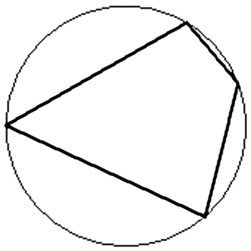
Стороны параллелограмма равны 18 и 20. Высота, опущенная на меньшую из этих сторон, равна 10. Найдите длину высоты, опущенной на большую сторону параллелограмма.

В четырёхугольник вписана окружность, Найдите длину четвёртой стороны четырёхугольника.

Площадь треугольника равна 24, средняя линия, параллельная стороне Найдите площадь треугольника
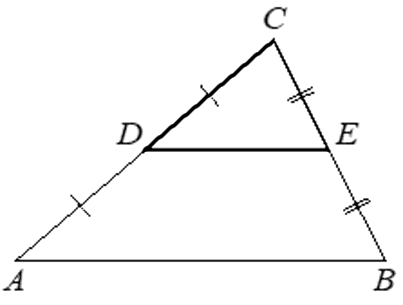
Отрезки и диаметры окружности с центром . Угол равен . Найдите угол . Ответ дайте в градусах.
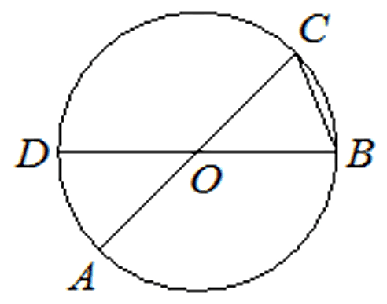
Угол равен Его сторона касается окружности с центром в точке Отрезок пересекает окружность в точке (см. рисунок). Найдите градусную меру дуги окружности, заключённой внутри этого угла. Ответ дайте в градусах.
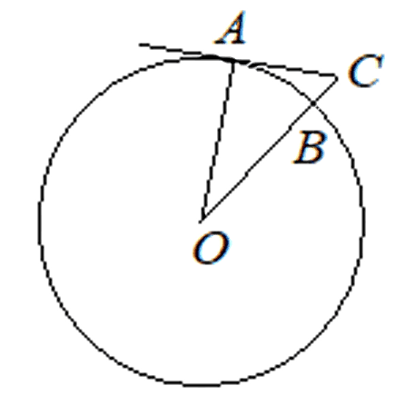
Найдите угол , если его сторона касается окружности с центром , отрезок пересекает окружность в точке (см. рис.), а дуга окружности, заключённая внутри этого угла, равна . Ответ дайте в градусах.

Стороны параллелограмма равны 24 и 27. Высота, опущенная на меньшую из этих сторон, равна 18. Найдите высоту, опущенную на большую сторону параллелограмма.
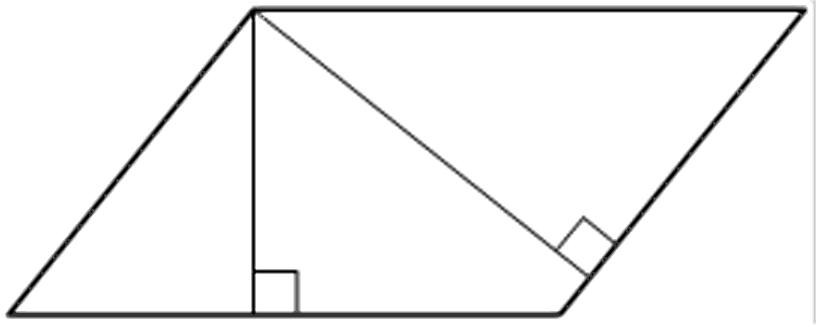
В треугольнике угол равен — биссектриса, угол равен Найдите величину угла Ответ дайте в градусах.
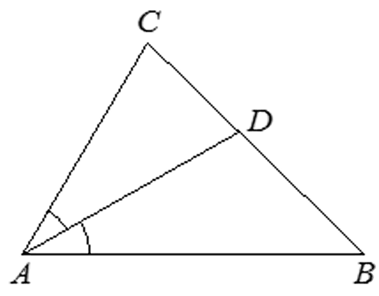
Центральный угол на больше острого вписанного угла, опирающегося на ту же дугу окружности. Найдите вписанный угол. Ответ дайте в градусах.
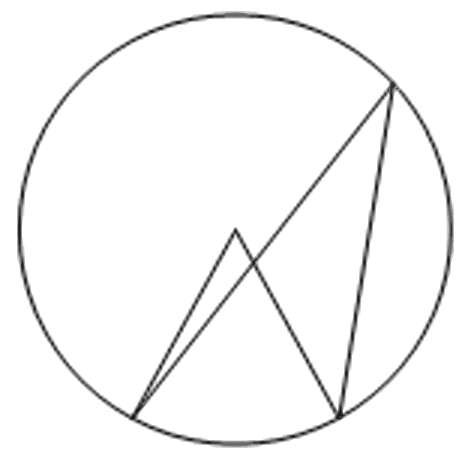
Найдите величину центрального угла, если он на больше острого вписанного угла, опирающегося на ту же дугу. Ответ дайте в градусах.
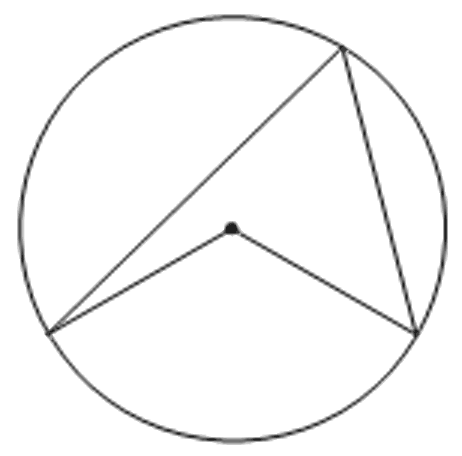
В треугольнике стороны и равны. Внешний угол при вершине равен Найдите угол Ответ дайте в градусах.
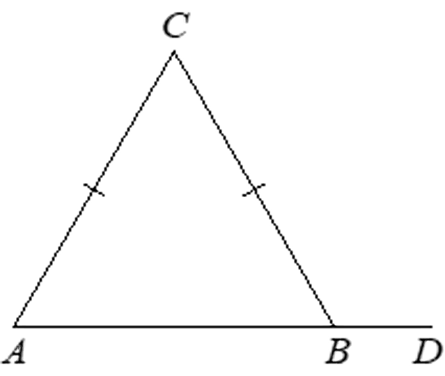
Острый угол прямоугольного треугольника равен Найдите величину угла между высотой и медианой проведёнными из вершины прямого угла Ответ дайте в градусах.

Отрезки и диаметры окружности с центром Угол равен Найдите величину вписанного угла Ответ дайте в градусах.
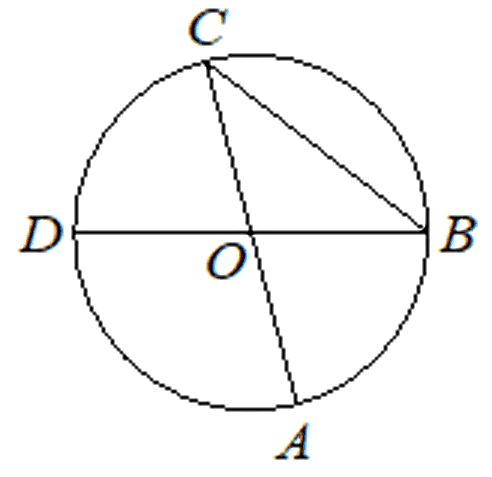
В треугольнике угол равен — биссектриса, угол равен Найдите величину угла Ответ дайте в градусах.
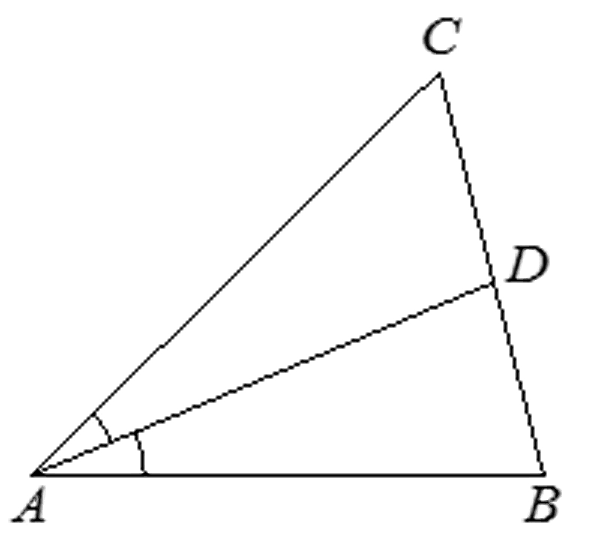
Отрезки и диаметры окружности с центром . Угол равен . Найдите вписанный угол . Ответ дайте в градусах.
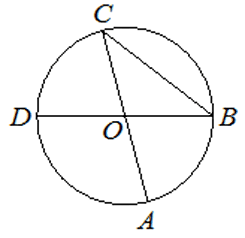
Центральный угол на больше острого вписанного угла, опирающегося на ту же дугу окружности. Найдите величину вписанного угла. Ответ дайте в градусах.
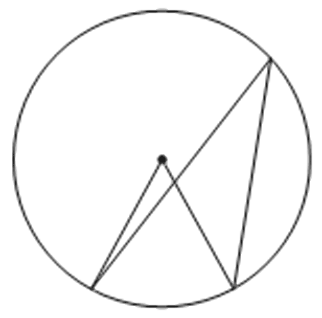
Четырёхугольник вписан в окружность. Угол равен , угол равен . Найдите угол . Ответ дайте в градусах.
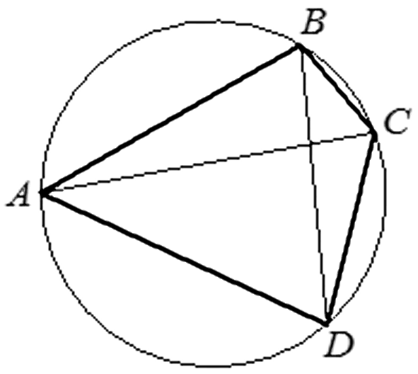
В треугольнике угол равен — биссектриса, угол равен Найдите величину угла Ответ дайте в градусах.
Площадь параллелограмма равна 60. Точка середина стороны Найдите площадь треугольника

Угол равен . Его сторона касается окружности с центром в точке . Отрезок пересекает окружность в точке (см. рис.). Найдите градусную меру дуги окружности, заключённой внутри этого угла. Ответ дайте в градусах.
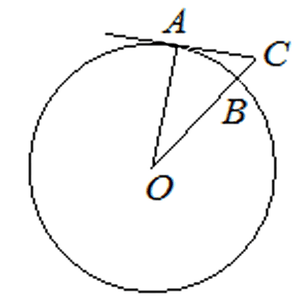
Острый угол прямоугольного треугольника равен Найдите величину угла между биссектрисой и медианой проведёнными из вершины прямого угла Ответ дайте в градусах.

В четырёхугольник вписана окружность, Найдите периметр четырёхугольника
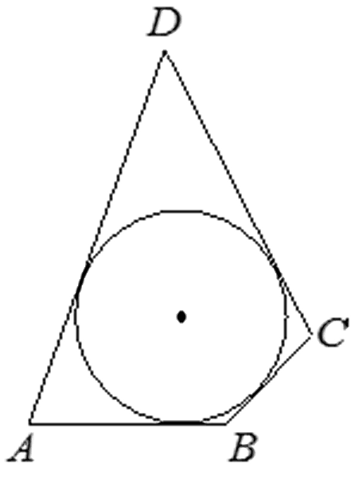
В четырёхугольник периметр которого равен 30, вписана окружность, Найдите длину стороны
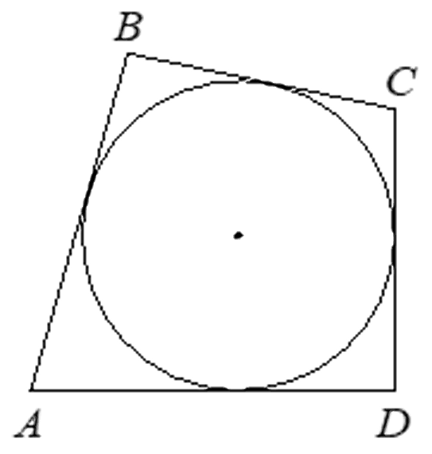
Площадь треугольника равна 60, средняя линия, параллельная стороне Найдите площадь трапеции

В треугольнике сторона равна , угол равен Найдите радиус описанной около этого треугольника окружности.
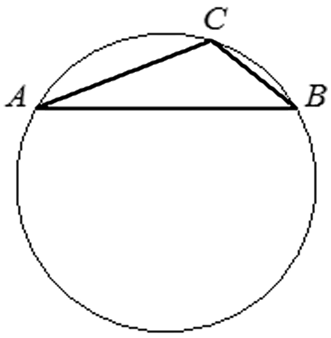